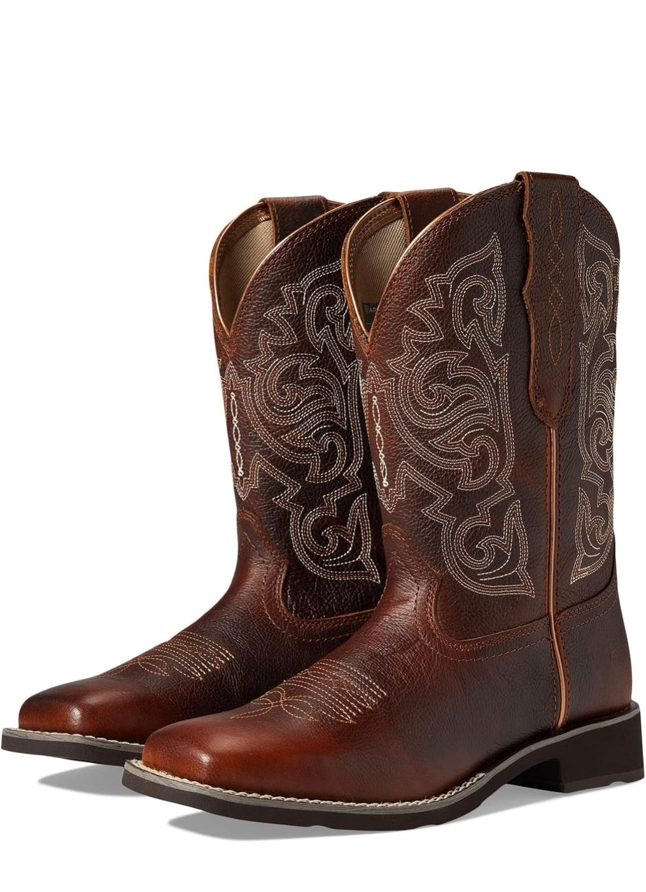
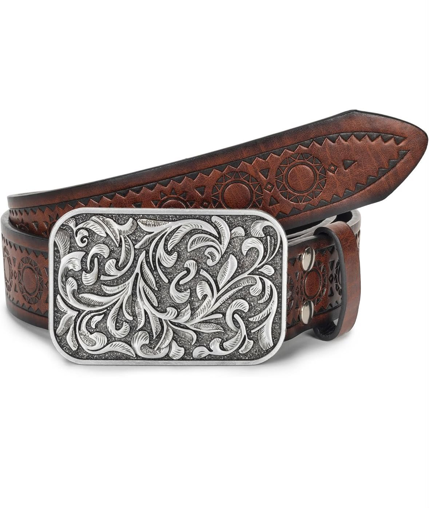

Reina del Rancho
Botas bordadas y faja con hebilla plateada de flores: el dúo que no pasa desapercibido.
- Botas Western Ariat Delilah (Mujer)
- Faja Hebilla Flor Diamante (Mujer)
Precio especial de combo
Pedir combo